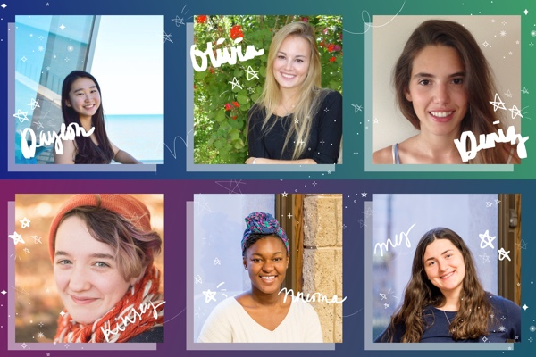
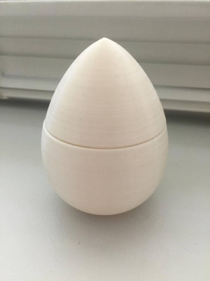

Hello! I’m Alyssa Liu: user experience designer, graphic designer, and web developer. I grew up in Naperville, IL and am now a junior studying computer science, linguistics, and design at Northwestern University. I love creating things and experiences, whether via Sketch, code, or 3D printing. If I’m not tinkering or sketching, I’m probably drinking bubble tea or listening to music. Everyday, I’m fascinated by the ways technology touches our lives, especially with augmented reality and user experience. My dream is to bring wonder and a sense of connectedness to people’s lives via thoughtful design and technology. However much I dream, I aim to do.
In User Experience Design, I went through a design cycle to discover a white space and design for it. The resulting Spotify plugin paired with a hardware device, collectively called shAIR, is designed to help people connect with each other using music. At the conclusion of the course, I began to understand my design philosophy and decided to continue pursuing this project as the foundation of my startup, Hazumi.
Role: UX Researcher and Designer at shAIR / Founder at Hazumi
I observed students on Northwestern’s campus to uncover a white space in social music experiences. After exploring and sharing many concepts in class, my team decided to flesh out a Spotify plugin that paired with a light-up star device. The device would alert users their friends are listening to music, whose current tracks were depicted on a map embedded in Spotify.
Despite being attached to our initial ideas, including speakers, playlists, and DJ apps, thorough research of the market and technological constraints allowed us to identify a meaningful final concept to pursue.
This project established the roots to my design philosophy: thoughtful design can bring wonder and connectivity to people’s lives. In addition, I am very excited to continue working on shAIR as my first entrepreneurial venture, Hazumi.
Orbit
Slant produces a quarterly experimental multimedia magazine online. For Winter 2017, I combined my interests in illustration and VR to create a 3D experience of my artwork, demonstrating the theme of “rhythm.” Working with the collective was an extraordinary creative experience.
Role: collective contributor
Skills: WebVR, illustration, Google Cardboard, A-Frame
Working with the theme of “rhythm,” I illustrated a constellation in “orbit” represented by a female figure. Using the image as a texture for 3D shapes, I was able to create an orbiting system with my artwork embedded. The many constellation motifs had their own rhythm in space.
I had to stretch my creative limits to create a fresh experience that demonstrated the theme. Bouncing ideas off the other collective members from various artistic backgrounds was invaluable to coming to my final result.
This experience solidified my belief in the power of interdisciplinary teams. After a long period of mostly technical projects, this artistic contribution was a breath of fresh air expanding my view on what’s possible between visual art and code.
BuildHer
For Chicago’s first student-run women’s hackathon, I crafted an effective brand by creating a logo, style guide, website design, and other visual assets. While I had done smaller branding projects for hackathons or class projects, this was my first large-scale project. We overcame creative differences through empathy and iteration.
Role: Branding Design - Digital Lead
Skills: branding design, graphic design, web design, Sketch
For BuildHer, I crafted a meaningful visual brand alongside a partner specializing in print. The final product was an Artemis and galaxy theme, as seen in the moon and arrow in the power logo. The light, versatile logo was used on a variety of jewel tone backgrounds. The subtle galaxy was continued with ASCII constellations and floating stars on the website.
To maintain the integrity of my own creative vision and balance it with my partner’s, we distilled and compared our visions, considered our audience, and constantly iterated. We reconciled our different concepts and created an integrated brand that propelled BuildHer’s overall message.

Creating a brand from scratch for a major event is a daunting yet satisfying task. We were able to balance BuildHer’s vision with aesthetics, and then incorporate these elements consistently when planning the hackathon.
Big Moo
For my submission to Wildhacks Hackathon 2016, I made a visual experience for interfacing with music loops. Using A-Frame, I created an immersive galaxy with interactive shapes that play samples. I created my first VR experience for Google Cardboard, learned how to express my creativity with code, and practiced working with a partner to deliver a product in a time-sensitive environment.
Drawing on my interests in VR and music, I developed a vision for a “galaxy” where users experiment with 3D objects linked to music loops. I brought on a partner to help develop the experience. We had a rare opportunity to be truly free in expressing ourselves through code and wanted to share something whimsical and interactive with other hackathon attendees.
Creating a working product within 36 hours using an unfamiliar framework was a unique challenge. We were able to navigate A-Frame to create this novel experience. Our next biggest challenge was building an interesting, immediately learnable virtual “world.” Setting manageable checkpoint goals early on and developing our project in incremental stages was key to our success.
With the opportunity to combine my different passions for music and technology, this was the most enjoyable and creative hackathon project I have worked on to date. I now feel empowered and excited to create more VR experiences.
Eggdrop
For Industrial Design Projects II, I took inspiration from an existing product we love and applied its visual brand language to creating a new product. I studied rassen chopsticks by Nendo to design a new tea steeper. Through this project I refined my own design philosophy and designed a product I am passionate about developing further.
After studying Nendo’s core values, visual signatures, and user experience, I distilled their brand to being minimalist, functional, and whimsical. I created the egg- and waterdrop-shaped tea steeper by starting with a simple yet unexpected perimeter shape, then considering the core functionalities necessary.
I am very happy with how my sketches translated to a 3D model and intend to do more work to refine my design. Through this process, I had to balance Nendo’s design qualities with my own and balance aesthetics with functionality. Going through the design cycle by prototyping provided insight that will drive the next iteration of my design.

By understanding and expanding on a brand I admire and resonate with, I was able to design a new product I feel represents my design philosophy very well. I am excited to continue working on this project.
Honeycomb
For Design Thinking Doing, an introductory design course, my team practiced iterative user-centered design to design a set of adaptable study space furniture: the Honeycomb table and the Honeycomb study pod. Just as our furniture pieces fit together, throughout the project, I was fitting my team members together, like a honeycomb.
Observations of existing study spaces, expert interviews, surveys, and prototyping, and user testing were the driving forces of our project. We split the early research evenly, and I played a role in developing the project idea and managing the execution of our vision. We were all very passionate about improving Northwestern’s study spaces, making for final concepts we are proud of.
A key challenge was providing structure to my diverse and sometimes divergent team. Instead of focusing on our differences, we harnessed our individual strengths to deliver two solid design concepts for gallery walks and reviews. With the many deliverables required for the class, a high level of organization and foresight was needed.
I learned from working on Honeycomb that working on a specialized team with diverse skillsets can be a very rich learning experience. Our final product also benefits from each of our different contributions, making it better than anything we could have created individually.
Alyssa is a junior studying Computer Science and Linguistics while pursuing the Segal Design Certificate at Northwestern University. She strives to create designs that are functional and bring wonder and connectivity to people’s lives. Besides design and technology, she has passions for quirky music, food, and stationery.
Read about my transition from code to design in my Women Who Reign feature.